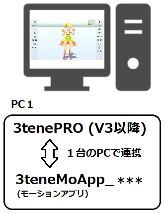
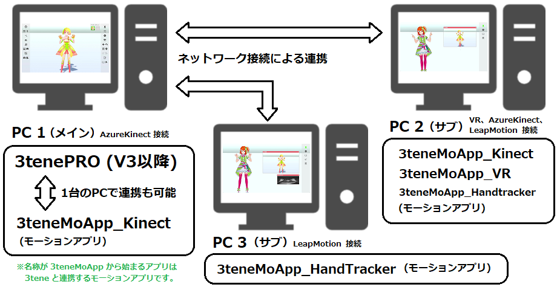
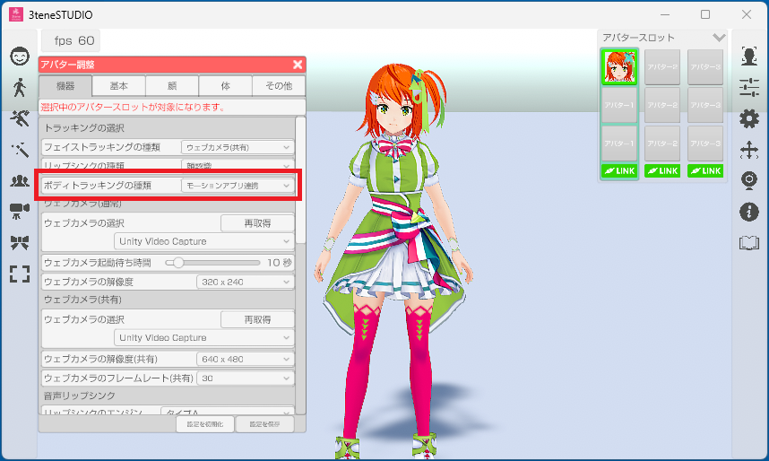
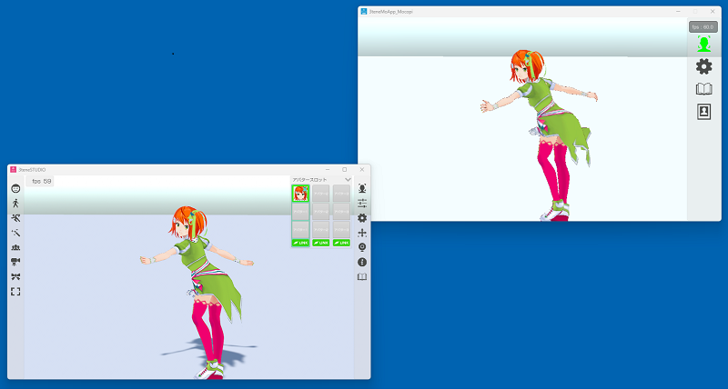

3tene を拡張する 3teneMotionApp システムを搭載。
3tene 本体の更新を行わずに新たな機器追加が可能になりました。
3tene 本体とモーションアプリを連携する事でトラッキングを可能にします。

3tene V3 以降では既存の Azure Kinect だけでなく、
LeapMotion、VR、Nuitrack もモーションアプリとして追加されました。
※3tene 本体から VR 機能を切り離したので SteamVR は起動しなくなりました。
（モーションアプリ連携で VR を使用する場合は SteamVR が起動します。）
また、PC 1台に対して1台しか接続できない機器でも
複数の PC を用意してローカルネットワークで繋ぐことで
3tene で複数台の機器が利用可能になります。
PC 複数台で構成する事で負荷分散も可能になります。

- モーションアプリを起動します。
- モーションアプリのトラッキングを開始して、機器が動作しているのを確認。
- 3tene を起動します。
- 3tene の「アバターの調整」の「機器タブ」を選択。 5.「ボディトラッキングの種類」を「3teneモーションアプリ」に変更。

- 3tene のトラッキングを開始してアバターが動くのを確認する。 ※モーションアプリとの連携（通信）が確立していればアバターが動きます。

「アバター調整」の「設定：3teneモーションアプリ」の「IPアドレス」に
モーションアプリを動かしているPCのIPアドレスを入力します。
※モーションアプリの「設定：情報」にIPアドレスが表示されます。
１台のPCで連携する場合は「IPアドレス」に 127.0.0.1 を設定してください。
これは通信先を自分自身（ローカルホスト）にする設定になります。
3tene のトラッキングを開始してアバターが動くのを確認する。
※モーションアプリとの連携（通信）が確立していればアバターが動きます。
設定が正しく行われても※セキュリティソフトにブロックされ、
正常に動作しない場合があります。そのような場合には
モーションアプリがファイアウォールにブロックされないように設定してください。
セキュリティソフトについて